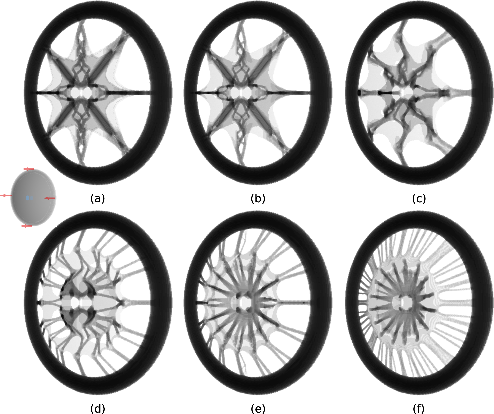

About Myself
I am currently a first-year Ph.D. student at the Computational Robotics Lab(CRL) at ETH Zürich, advised by Prof. Stelian Coros. I obtained my master's degree in Computer Graphics (CGGT) from the University of Pennsylvania with a thesis titled hybrid Lagrangian-Eulerian topology optimization under the supervision of Prof. Chenfanfu Jiang. Graphics is my favorite flavor of computer science. It has significant visual appeal while being based on a solid mathematical foundation. For me, it is especially exciting to build computer-graphics effects indistinguishable from real-world phenomena and to utilize optimization methods to deliver robust and fundamental solutions. CV
Publications

A Hybrid Lagrangian-Eulerian Method for Topology Optimization , Yue Li*, Xuan Li*, Minchen Li*, Yinxin Zhu, Bo Zhu, Chenfanfu Jiang, In submission, Arxiv, Code, YouTube. (* Equal Contribution)


Experiences
Visiting Scholar
Human Performance Capture. Co-advised by Prof. Christian Theobalt and Dr. Thabo Beeler.
Hybrid Lagrangian-Eulerian Topology Optimization. Advisor Prof. Chenfanfu Jiang.
Teaching assistant, CIS563 Physics-based Animation Fall 2019. Instructor Prof. Chenfanfu Jiang.
Research Intern
Rendering with Deep Learning. Advisor Prof. Kenny Mitchell.
Research Intern
Research Intern in the group of Napier Interactive Graphics and Simulation. Advisor Prof. Kenny Mitchell.
Our paper "Deep Precomputed Radiance Transfer for Deformable Object" has been accepted to PACM CGIT.
Research Intern
 Megvii Research (Face++), Beijing
Megvii Research (Face++), BeijingResearch Intern Led by Liqian Ma and Haoqiang Fan.
Our paper on 'Feature-preserving detailed 3D face reconstruction from a single image' is awarded of Best Paper at ACM Conference on Visual Media Production 2018 by the ACM Europe Council.